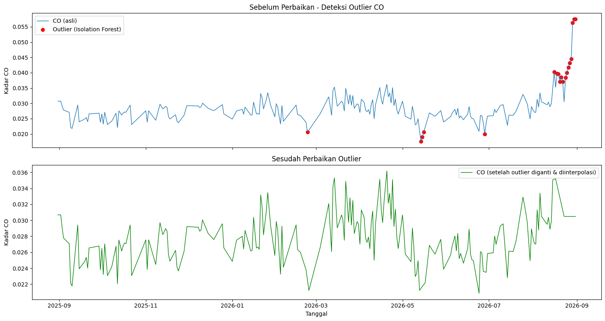
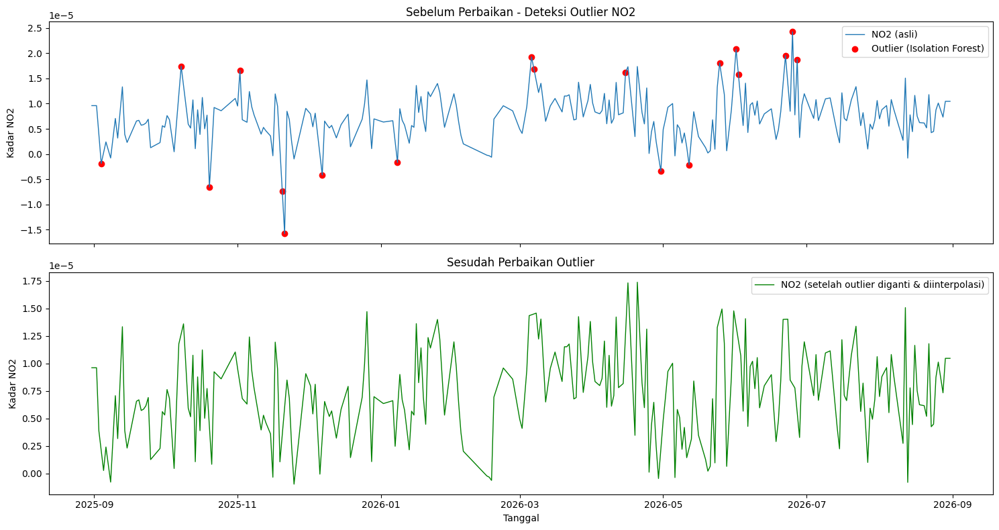

Preprocessing Sebelum Ekstraksi Fitur#
Tahap ini melanjutkan data kualitas udara Kabupaten Nunukan (CO, NO2, SO2) yang sudah dikumpulkan pada tugas sebelumnya. Sebelum data dipakai untuk ekstraksi fitur, data perlu melalui tiga tahap preprocessing: deteksi & perbaikan outlier, imputasi missing value, lalu ekstraksi fitur dengan TSFEL.
Seluruh data pada tahap ini sudah difilter sesuai wilayah Kabupaten Nunukan (kecamatan/kabupaten masing-masing mahasiswa), mengikuti data yang sudah dikumpulkan pada tugas crawling sebelumnya.
1. Deteksi & Perbaikan Outlier#
Deteksi outlier dilakukan dengan Isolation Forest (asumsi 5% data adalah anomali),
lalu nilai yang terdeteksi sebagai outlier diganti NaN dan diisi ulang dengan
interpolasi linear terhadap waktu.
import pandas as pd
import numpy as np
import matplotlib.pyplot as plt
from sklearn.ensemble import IsolationForest
POLLUTANTS = ["CO", "NO2", "SO2"]
CONTAMINATION = 0.05
for pol in POLLUTANTS:
# 1. Load data hasil imputasi missing value
df = pd.read_csv(f"{pol}_Nunukan_Timeseries_imputed.csv")
df = df.dropna(subset=[pol]).copy()
df["date"] = pd.to_datetime(df["date"])
df = df.sort_values("date").reset_index(drop=True)
# 2. Deteksi outlier dengan Isolation Forest
model = IsolationForest(contamination=CONTAMINATION, random_state=42)
pred = model.fit_predict(df[[pol]])
df["anomaly"] = pred # -1 = outlier, 1 = normal
outliers = df[df["anomaly"] == -1]
print(f"[{pol}] Jumlah outlier terdeteksi: {len(outliers)} dari {len(df)} data")
# 3. Ganti outlier jadi NaN, lalu interpolasi
df_fixed = df.copy()
df_fixed.loc[df_fixed["anomaly"] == -1, pol] = np.nan
df_fixed[pol] = df_fixed[pol].interpolate(method="linear").ffill().bfill()
# 4. Plot sebelum vs sesudah
fig, axes = plt.subplots(2, 1, figsize=(15, 8), sharex=True)
axes[0].plot(df["date"], df[pol], label=f"{pol} (asli)", linewidth=1)
axes[0].scatter(outliers["date"], outliers[pol], color="red",
marker="o", label="Outlier (Isolation Forest)", zorder=5)
axes[0].set_title(f"Sebelum Perbaikan - Deteksi Outlier {pol}")
axes[0].legend()
axes[1].plot(df_fixed["date"], df_fixed[pol], color="green", linewidth=1,
label=f"{pol} (setelah outlier diganti & diinterpolasi)")
axes[1].set_title(f"Sesudah Perbaikan Outlier {pol}")
axes[1].legend()
plt.tight_layout()
plt.savefig(f"outlier_{pol}_before_after.png", dpi=150)
df_fixed[["date", pol]].to_csv(f"{pol}_Nunukan_Timeseries_fixed.csv", index=False)
Ringkasan outlier yang terdeteksi:
polutan |
n_data |
n_outlier |
pct_outlier |
tgl_outlier_pertama |
tgl_outlier_terakhir |
|---|---|---|---|---|---|
CO |
366 |
19 |
5.19 |
2026-02-23 |
2026-08-31 |
NO2 |
366 |
19 |
5.19 |
2025-09-04 |
2026-06-27 |
SO2 |
366 |
19 |
5.19 |
2025-09-08 |
2026-08-09 |
Grafik CO sebelum & sesudah perbaikan#

Catatan tentang lonjakan CO di akhir Agustus 2026 Pada rentang 21–31 Agustus 2026, kadar CO naik tajam dan seluruhnya terdeteksi sebagai outlier oleh Isolation Forest, dengan nilai tertinggi sepanjang data tercatat pada 30–31 Agustus 2026. Lonjakan ini bertepatan dengan periode karhutla (kebakaran hutan dan lahan) yang meluas di berbagai wilayah Kalimantan pada Agustus 2026 akibat musim kemarau panjang yang diperparah El Niño. Asap kebakaran yang terbawa angin memicu kenaikan konsentrasi CO di udara meski jumlah titik panas di sekitar Nunukan (Kalimantan Utara) sendiri relatif lebih sedikit dibanding Kalimantan Tengah dan Kalimantan Barat. Karena nilainya jauh di luar pola historis, algoritma outlier tetap menandainya sebagai anomali, sehingga pada data yang sudah “fixed” lonjakan ini diratakan lewat interpolasi perlu dicatat di laporan bahwa event asap ini adalah kejadian nyata, bukan noise sensor.
Grafik NO2 sebelum & sesudah perbaikan#

Grafik SO2 sebelum & sesudah perbaikan#

2. Imputasi Missing Value#
Missing value pada data mentah (166 hari kosong pada CO, 124 pada NO2, 55 pada SO2
dari total 366 hari) sudah diisi penuh pada tahap sebelumnya (file *_imputed.csv)
menggunakan interpolasi/forward-fill, sehingga tidak ada lagi nilai kosong yang
masuk ke tahap ekstraksi fitur.
3. Ekstraksi Fitur dengan TSFEL#
Ekstraksi fitur memakai TSFEL, menghasilkan
68 fitur dari 3 domain (statistical, temporal, spectral) untuk masing-masing
polutan. TSFEL versi terbaru memisahkan 6 fitur non-linear (dfa,
higuchi_fractal_dimension, hurst_exponent, lempel_ziv,
maximum_fractal_length, petrosian_fractal_dimension, mse) ke domain
fractal tersendiri; karena tugas ini hanya meminta 3 domain, fitur-fitur
tersebut digabungkan ke kelompok Temporal sesuai pengelompokan awal TSFEL.
import pandas as pd
import numpy as np
import inspect
import tsfel.feature_extraction.features as tsfel_features
POLLUTANTS = ["CO", "NO2", "SO2"]
fs = 1 # 1 observasi per hari
FEATURE_LIST = """abs_energy auc autocorr average_power calc_centroid calc_max calc_mean
calc_median calc_min calc_std calc_var dfa distance ecdf ecdf_percentile ecdf_percentile_count
ecdf_slope entropy fundamental_frequency higuchi_fractal_dimension hist_mode human_range_energy
hurst_exponent interq_range kurtosis lempel_ziv lpcc max_frequency max_power_spectrum
maximum_fractal_length mean_abs_deviation mean_abs_diff mean_diff median_abs_deviation
median_abs_diff median_diff median_frequency mfcc mse negative_turning neighbourhood_peaks
petrosian_fractal_dimension pk_pk_distance positive_turning power_bandwidth rms skewness slope
spectral_centroid spectral_decrease spectral_distance spectral_entropy spectral_kurtosis
spectral_positive_turning spectral_roll_off spectral_roll_on spectral_skewness spectral_slope
spectral_spread spectral_variation spectrogram_mean_coeff sum_abs_diff wavelet_abs_mean
wavelet_energy wavelet_entropy wavelet_std wavelet_var zero_cross""".split()
def to_scalar(result):
if isinstance(result, dict) and "values" in result:
result = result["values"]
if isinstance(result, (list, tuple, np.ndarray)):
return float(np.nanmean(np.asarray(result, dtype=float)))
return float(result)
def extract_one(fn_name, signal, fs):
fn = getattr(tsfel_features, fn_name)
params = inspect.signature(fn).parameters
result = fn(signal, fs) if "fs" in params else fn(signal)
return to_scalar(result)
for pol in POLLUTANTS:
df = pd.read_csv(f"{pol}_Nunukan_Timeseries_fixed.csv")
df["date"] = pd.to_datetime(df["date"])
df = df.sort_values("date").reset_index(drop=True)
df[pol] = pd.to_numeric(df[pol], errors="coerce")
# safety check outlier tambahan (IQR) sebelum ekstraksi fitur
Q1, Q3 = df[pol].quantile(0.25), df[pol].quantile(0.75)
IQR = Q3 - Q1
df.loc[(df[pol] < Q1 - 1.5*IQR) | (df[pol] > Q3 + 1.5*IQR), pol] = np.nan
df_clean = df.set_index("date").interpolate(method="time").ffill().bfill()
signal_1d = df_clean[pol].astype(float).values
row = {fn_name: extract_one(fn_name, signal_1d, fs) for fn_name in FEATURE_LIST}
pd.DataFrame([row]).to_csv(f"{pol}_Nunukan_TSFEL.csv", index=False)
Hasil ekstraksi fitur per domain#
Statistical Domain (21 fitur)
Fitur |
CO |
NO2 |
SO2 |
|---|---|---|---|
abs_energy |
0.27862 |
2.36373e-08 |
7.22931e-07 |
average_power |
0.000763342 |
6.47597e-11 |
1.98063e-09 |
calc_max |
0.0348969 |
1.50682e-05 |
0.00010691 |
calc_mean |
0.0274505 |
7.09712e-06 |
-2.04958e-06 |
calc_median |
0.0271924 |
6.97647e-06 |
-3.81442e-06 |
calc_min |
0.0208626 |
-9.81828e-07 |
-0.000112941 |
calc_std |
0.00277938 |
3.77011e-06 |
4.43962e-05 |
calc_var |
7.72493e-06 |
1.42137e-11 |
1.97102e-09 |
ecdf |
0.0150273 |
0.0150273 |
0.0150273 |
ecdf_percentile |
0.027383 |
6.98326e-06 |
-2.05955e-06 |
ecdf_percentile_count |
182.5 |
182.5 |
182.5 |
ecdf_slope |
113.63 |
95097.9 |
8678.75 |
entropy |
0.989321 |
0.996949 |
0.999358 |
hist_mode |
0.0257746 |
6.2407e-06 |
-1.40084e-05 |
interq_range |
0.00377363 |
5.13729e-06 |
5.45609e-05 |
kurtosis |
-0.315646 |
-0.603237 |
-0.113452 |
mean_abs_deviation |
0.00226385 |
3.05789e-06 |
3.46067e-05 |
median_abs_deviation |
0.00195732 |
2.56269e-06 |
2.66183e-05 |
pk_pk_distance |
0.0140343 |
1.60501e-05 |
0.000219851 |
rms |
0.0275909 |
8.03634e-06 |
4.44435e-05 |
skewness |
0.184097 |
-0.0531476 |
0.0190117 |
Temporal Domain (21 fitur, termasuk sub-kategori fraktal)
Fitur |
CO |
NO2 |
SO2 |
|---|---|---|---|
auc |
10.0163 |
0.00258932 |
0.0103055 |
autocorr |
7 |
2 |
1 |
calc_centroid |
187.754 |
200.32 |
180.522 |
dfa |
1.09545 |
0.850275 |
0.719522 |
distance |
365.001 |
365 |
365 |
higuchi_fractal_dimension |
1.79642 |
1.88136 |
1.94272 |
hurst_exponent |
0.868289 |
0.717144 |
0.701121 |
lempel_ziv |
0.166667 |
0.188525 |
0.202186 |
maximum_fractal_length |
-0.245368 |
-2.95763 |
-1.80483 |
mean_abs_diff |
0.00123694 |
2.56689e-06 |
3.90704e-05 |
mean_diff |
-5.29308e-07 |
2.33994e-09 |
2.08623e-07 |
median_abs_diff |
0.00067574 |
1.66529e-06 |
2.94622e-05 |
median_diff |
2.16304e-05 |
0 |
-1.59603e-06 |
mse |
1.12817 |
1.17814 |
1.35631 |
negative_turning |
59 |
76 |
93 |
neighbourhood_peaks |
15 |
17 |
20 |
petrosian_fractal_dimension |
1.02132 |
1.0269 |
1.03269 |
positive_turning |
59 |
75 |
94 |
slope |
6.19674e-06 |
7.2994e-09 |
1.87767e-08 |
sum_abs_diff |
0.451485 |
0.000936914 |
0.0142607 |
zero_cross |
0 |
16 |
122 |
Spectral Domain (26 fitur)
Fitur |
CO |
NO2 |
SO2 |
|---|---|---|---|
fundamental_frequency |
0.00819672 |
0.00273224 |
0.00273224 |
human_range_energy |
0 |
0 |
0 |
lpcc |
0.917156 |
0.588063 |
0.0971075 |
max_frequency |
0.382514 |
0.456284 |
0.464481 |
max_power_spectrum |
49.0833 |
37.7626 |
12.4217 |
median_frequency |
0 |
0.112022 |
0.202186 |
mfcc |
8.43143 |
36.2542 |
42.3883 |
power_bandwidth |
0.352459 |
0.382514 |
0.434426 |
spectral_centroid |
0.065298 |
0.159281 |
0.217667 |
spectral_decrease |
-8.90315 |
-1.366 |
0.00925378 |
spectral_distance |
-1124.99 |
-0.442803 |
-1.68649 |
spectral_entropy |
0.671061 |
0.833144 |
0.90735 |
spectral_kurtosis |
5.95697 |
2.15339 |
1.84302 |
spectral_positive_turning |
54 |
57 |
64 |
spectral_roll_off |
0.382514 |
0.456284 |
0.464481 |
spectral_roll_on |
0 |
0 |
0.0163934 |
spectral_skewness |
2.00925 |
0.679461 |
0.269873 |
spectral_slope |
-0.0476622 |
-0.02341 |
-0.0083436 |
spectral_spread |
0.123825 |
0.15516 |
0.145901 |
spectral_variation |
0.850024 |
0.564399 |
0.204832 |
spectrogram_mean_coeff |
1.28763e-05 |
2.5104e-11 |
3.70916e-09 |
wavelet_abs_mean |
0.00169461 |
3.50057e-07 |
5.04035e-07 |
wavelet_energy |
0.00760351 |
5.42583e-06 |
5.59249e-05 |
wavelet_entropy |
2.08358 |
2.17228 |
2.18574 |
wavelet_std |
0.0073996 |
5.41274e-06 |
5.59222e-05 |
wavelet_var |
6.59076e-05 |
3.11213e-11 |
3.19528e-09 |
Ringkasan#
Tahap |
Keterangan |
|---|---|
Preprocessing |
Data difilter sesuai Kabupaten Nunukan, missing value diimputasi penuh (0 nilai kosong tersisa dari 366 hari), outlier dideteksi dengan Isolation Forest (~5,19% data per polutan) dan diperbaiki lewat interpolasi waktu |
Catatan khusus |
Lonjakan CO akhir Agustus 2026 teridentifikasi sebagai outlier statistik, namun sebenarnya mencerminkan kejadian nyata (karhutla/asap Kalimantan), bukan kesalahan data |
Ekstraksi fitur |
68 fitur time series diekstrak dengan TSFEL untuk tiap polutan, terbagi ke domain Statistical (21), Temporal (21, termasuk fraktal), dan Spectral (26) |